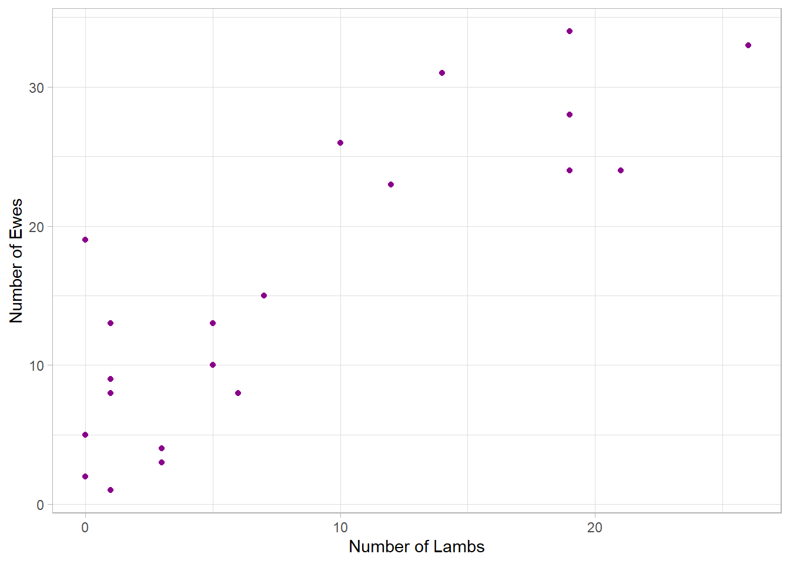
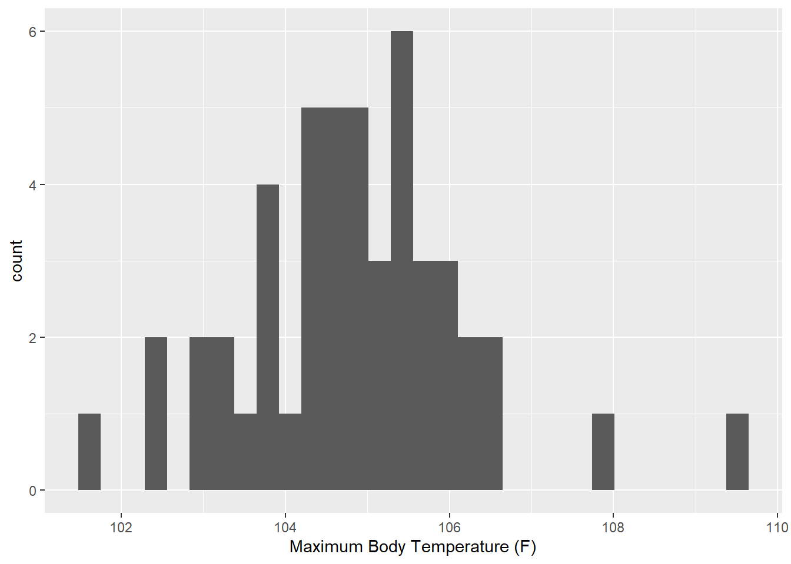
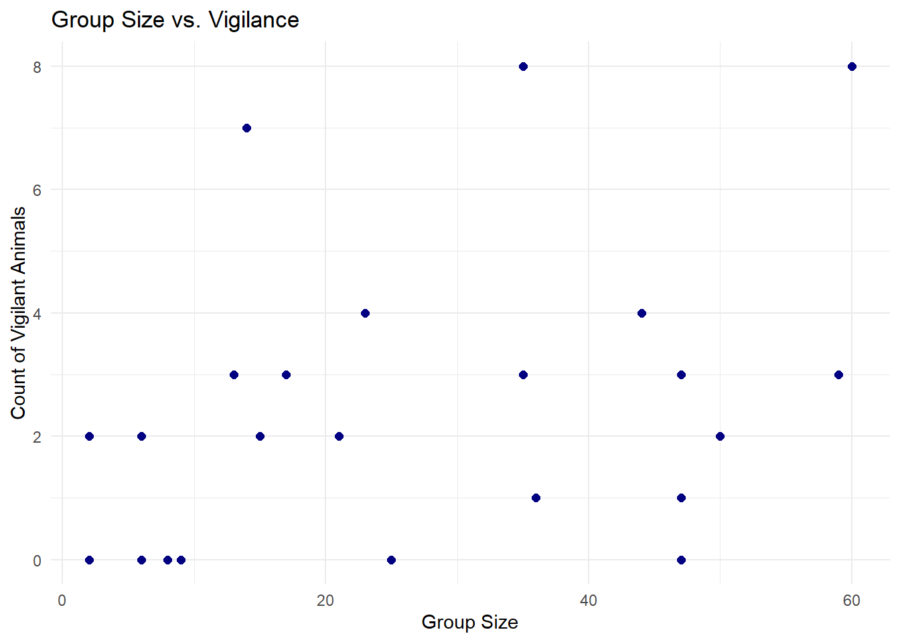
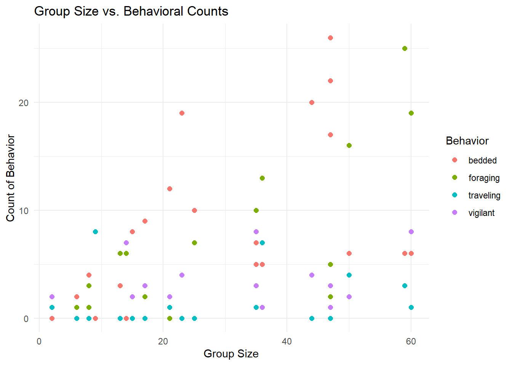
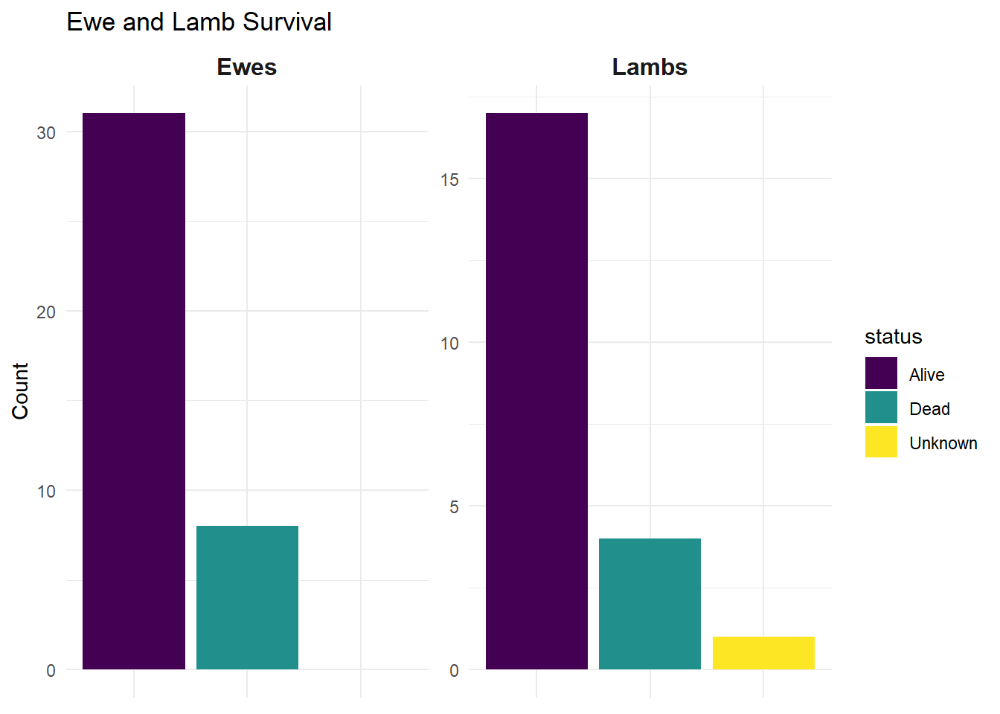

Chapter 4 Data Exploration
Data exploration is a crucial step in any research process, providing insights into the relationships, patterns, and potential anomalies within a dataset. Before conducting formal analyses, exploring data helps to identify trends, assess distributions, and ensure the quality and consistency of the data. By exploring the data visually, you can build an intuitive understanding of the dataset, ultimately leading to more robust and informed analyses. Below are several examples of how one can explore their data.
*Imporant note: I have not entered all of my data and am only using a subset. Results from the code in this chapter may not represent the dataset accurately.
Before exploring the data, ensure the database and applicable packages are loaded correctly
#load packages
library(DBI)
library(tidyverse)
#load database
jd_sheep_db <- dbConnect(RSQLite::SQLite(),
"../../../Project/Data/raw/Database/jd_sheep.db")
#load tables
sheep <- dbGetQuery(jd_sheep_db,
"SELECT * FROM sheep;")
observations <- dbGetQuery(jd_sheep_db,
"SELECT * FROM observations;")
mortalities <- dbGetQuery(jd_sheep_db,
"SELECT * FROM mortalities;")
lambs <- dbGetQuery(jd_sheep_db,
"SELECT * FROM lambs;")
resight <- dbGetQuery(jd_sheep_db,
"SELECT * FROM resight;")
group_behavior <- dbGetQuery(jd_sheep_db,
"SELECT * FROM group_behavior;")
collars <- dbGetQuery(jd_sheep_db,
"SELECT * FROM collars;")
spatial_data <- dbGetQuery(jd_sheep_db,
"SELECT * FROM spatial_data;")4.1 Summary Statistics
A good first step in exploring data often involves calculating summary statistics. These provide a concise numerical overview of key aspects of the data, such as measures of central tendency (e.g., mean, median) and variability (e.g., standard deviation, range). Summary statistics are particularly useful for comparing groups or understanding distributions within the dataset, serving as a foundation for further exploration and analysis.
#create a table that summarizes the minimum, maximum, and mean of sheep observed in a group, calculated as a group total as well as for each age-sex class
group_summary <- observations %>%
select(total,
ewes,
lambs,
year_ewes,
year_rams,
rams) %>%
summarise(across(everything(),
list(mean = function(x) mean(x),
min = function(x) min(x),
max = function(x) max(x)),
.names = "{col}_{fn}"
)
)
group_summary## total_mean total_min total_max ewes_mean ewes_min ewes_max lambs_mean
## 1 22.91667 2 60 14.125 1 34 7.375
## lambs_min lambs_max year_ewes_mean year_ewes_min year_ewes_max year_rams_mean
## 1 0 26 1.166667 0 6 0.2083333
## year_rams_min year_rams_max rams_mean rams_min rams_max
## 1 0 1 0.04166667 0 14.2 Data Vizualizations
In R, ggplot is one of the most powerful and flexible packages for creating high-quality plots. Based on the Grammar of Graphics, ggplot allows users to build plots layer by layer, providing full control over the appearance and components of the visualizations. ggplot is great both for creating rudimentary plots used to explore your data, as well as detailed and beautiful plots demonstrating results from analyses.
4.2.1 Simple Plots
Here’s a simple example that demonstrates to build-on structure of ggplot using geoom_point to create a scatter plot of ewes vs lambs in groups.
ggplot(data = observations, #table containing desired variables
mapping = aes(x = lambs, #defining axis
y = ewes)) +
geom_point(col = "darkmagenta") + #plot type, add color
labs(x = "Number of Lambs", #adding labels
y = "Number of Ewes") +
theme_light() #choosing theme of plot
Here is another example, but this time creating a histogram of maximum body temperature of sheep during capture using geom_historgram. Overheating is a common issue for bighorn sheep during capture, and as such, there are several mitigation tactics we have on hand to reduce heat stress to the animals. For reference, mitigation efforts usually begin if the animal reaches 106 F and will increase in rigor if the sheep’s temperature continues to climb.
ggplot(data = sheep,
mapping = aes(x = temp)) +
geom_histogram() +
labs(x = "Maximum Body Temperature (F)")## `stat_bin()` using `bins = 30`.
## Pick better value with `binwidth`.
4.3 Exploring Data
4.3.1 Relationship Between Group Size and Behavior
Through this research, I hope to uncover the relationship between survival and group size. I hypothesize that as group size increases survival of both lambs and adult ewes will also increase. A biological mechanism that could explain this relationship is the level of vigilance a group provides. I am curious about the relationship between total group size and the number of animals in each group performing vigilant behavior.
# Join the observations and group_behavior tables, then plot the relationship
observations %>%
left_join(group_behavior, by = "group_id") %>%
ggplot(mapping = aes(x = total,
y = vigilant)) +
geom_point(color = "navyblue", size = 2) +
labs(x = "Group Size",
y = "Count of Vigilant Animals",
title = "Group Size vs. Vigilance") +
theme_minimal()
There doesn’t seem to be a strong relationship here. One of the benefits of a larger group is that individuals can relax their vigilance, while still benefiting from the heightened awareness of others, this is known as the “many eyes hypothesis.” I’m curious about the relationship between group size and foraging behavior. But I might as well plot the proportion of animals performing each behavior in the group to get a full picture of how behavior is distributed among individuals in a group.
#to do this, I will need to resahpe the data into long format to get a count for each behavior before plotting
observations %>%
left_join(group_behavior, by = "group_id") %>% #join the tables
pivot_longer(cols = c(foraging,
vigilant,
traveling,
bedded),
names_to = "behavior",
values_to = "count") %>%
ggplot(mapping = aes(x = total,
y = count,
color = behavior)) +
geom_point(size = 2) +
labs(title = "Group Size vs. Behavioral Counts",
x = "Group Size",
y = "Count of Behavior",
color = "Behavior") +
theme_minimal()
I find it interesting that vigilance seems to stay somewhat constant, despite the change in group size. I wonder if there is some type of threshold effect of “maximum vigilance required” to reduce risk and after that threshold is reached, vigilant behavior is no longer worth the sacrifice of energy that could be spent on another behavior. That would be a really cool relationship to observe!
4.3.2 Survival
Another key objective of this research is to determine survival rates of both lambs and adult ewes. I want to explore the counts of total ewes and lambs alive vs. dead. Because this data is stored in multiple tables and not necessarily in the format need to count, it will require a bit of manipulation before I can plot these data.
sheep %>%
left_join(lambs, by = "sheep_id") %>% #join lamb data with individual sheep data
left_join(mortalities, by = "sheep_id") %>% #join with mortalities table
filter(sex == "F") %>% #keep only ewes
mutate(lamb_status = case_when(
fate == "weaned" ~ "Alive", #weaned lambs are alive
fate == "deceased" ~ "Dead", #deceased lambs are dead
fate == "unknwn" ~ "Unknown", #lambs with unknown fate
)) %>%
mutate(ewe_status = case_when(
is.na(cause) ~ "Alive", #ewes without cause of death are alive
!is.na(cause) ~ "Dead" #ewes with a cause of death are dead
)
) %>%
select(lamb_status,
ewe_status) %>%
pivot_longer(cols = c(lamb_status, ewe_status), #pivot to count alive vs. dead
names_to = "status_type",
values_to = "status") %>%
filter(!is.na(status)) %>% #remove NAs
mutate(status_type = case_when(
status_type == "lamb_status" ~ "Lambs", #change the names to make plot prettier
status_type == "ewe_status" ~ "Ewes"
)) %>%
count(status_type, status) %>%
ggplot(mapping = aes(x = status,
y = n,
fill = status)) +
geom_bar(stat = "identity") +
facet_wrap(~status_type, scales = "free_y") + #facet for panels
scale_fill_viridis_d() + #viridis color scheme
labs(
title = "Ewe and Lamb Survival",
x = NULL, #remove x-axis
y = "Count"
) +
theme_minimal() +
theme(
axis.text.x = element_blank(), #remove redudant labels
strip.text = element_text(size = 12, face = "bold")
)
Mortality was higher for adult ewes than I would have expected. Lamb mortality is about what I would expect for a growing sheep population.